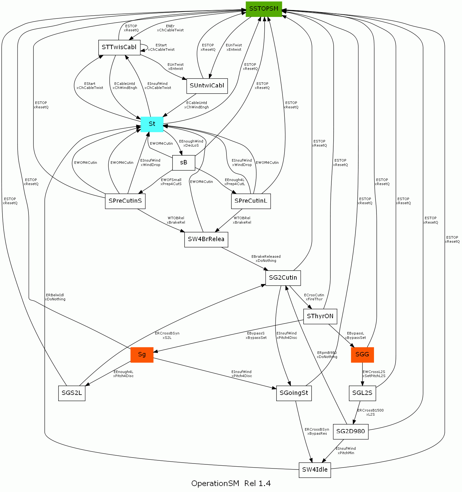

Die folgende Abbildung zeigt die Zustände (Quadraten) und Ereignisse (Pfeile) der Betriebsmaschine.
Diese Programmierung ist für folgende Operationen verantwortlich:
•Anschluss und Abschaltung vom Netz,
•Abwickeln von Stromkabeln,
• Änderung der Anschlussart des elektrischen Generators (4 oder 6 Pole)
Die "Production"-Staaten sind "Sg" und "SGG". Der Zustand "operativ, aber vom Netz getrennt" ist "St." Der Ausgangszustand ist "SSTOPSM".
Diese Maschine ist ein Sklave derSicherheiteine Maschine, d.h. sie erhält von ihr Ereignisse. DieLegende des M.E. Betriebsdiagrammslistet die möglichen Zustände und Ereignisse auf.
